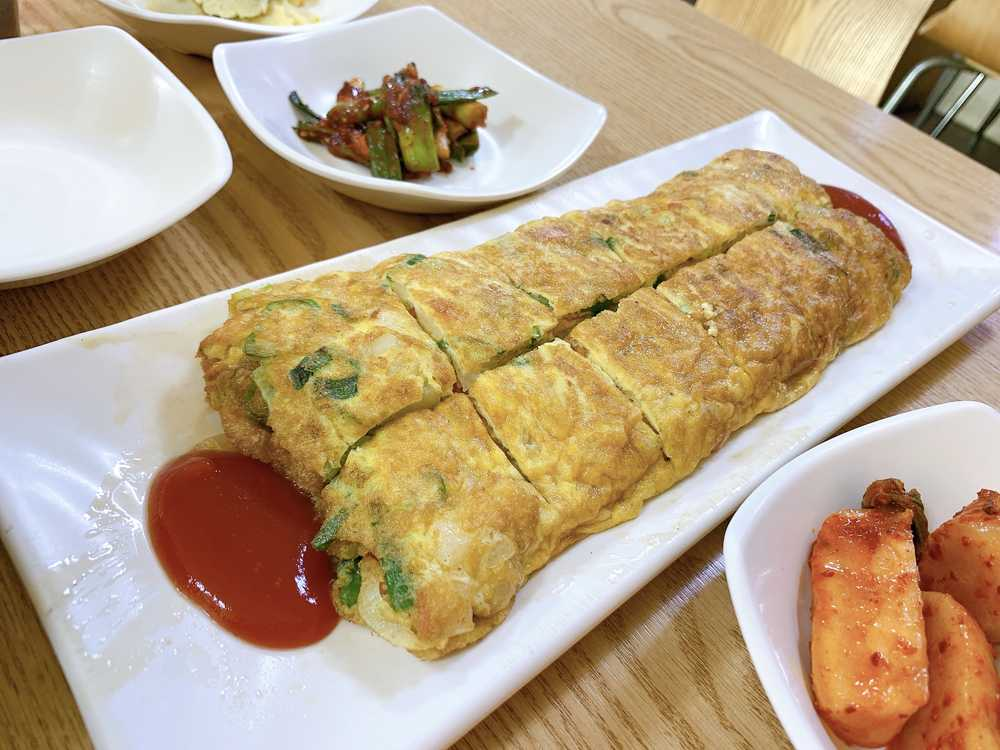
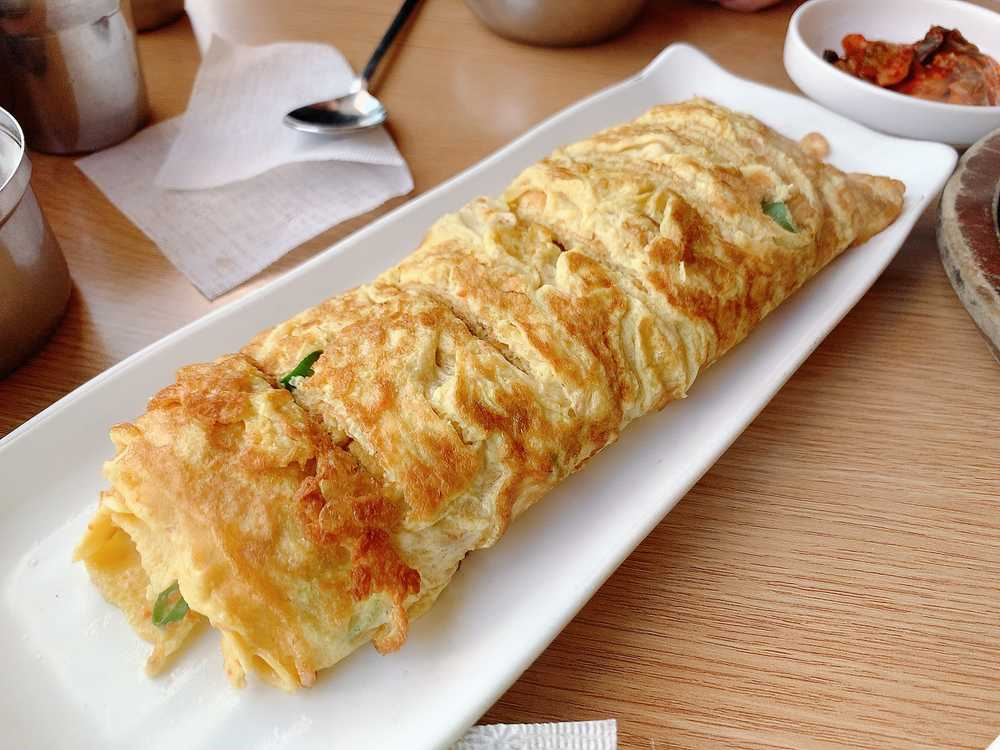
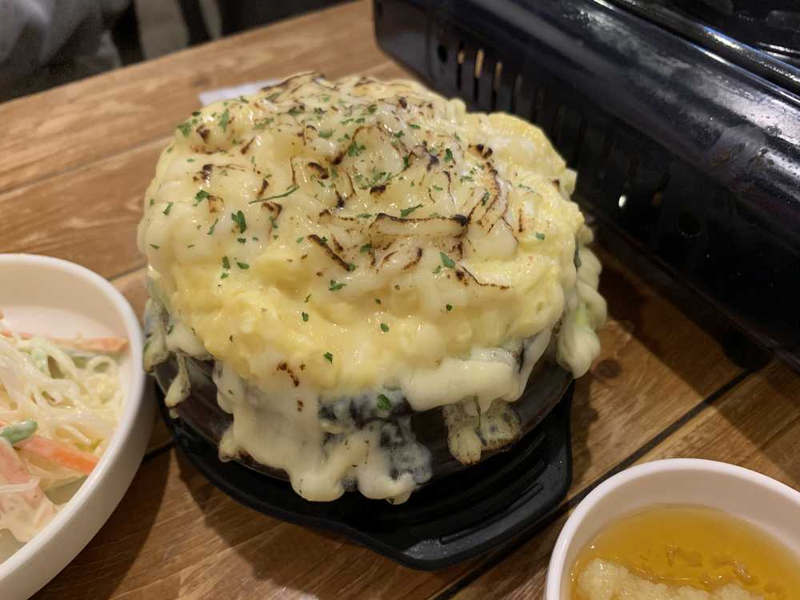

やっほ〜
ひいだよ🍓
あ！
昨日言ってた韓国のオススメのご飯の紹介🍽
早速しようかな😋
じゃあ今回はわたしらしく…
たまご料理の紹介🥚
韓国料理屋さんでよくある
「계란말이（ケランマリ）」
これは日本語で卵焼きです！！
お店でケランマリを頼むと
だいたいすごく大きいサイズのものが来ます😳
お店によっては
チーズケランマリって言って
中に伸びーるチーズが
たくさん入ってるものもあります🧀
甘い系ではありません🙅🏻♀️
写真はこちら↓

大きいでしょ！！
写真だと伝わりにくいのが😢

↑ここのお店はまじで
卵焼きのためだけに行ったㅋㅋㅋ
あと同じたまご系でいくと
「계란찜（ケランチム）」
これは茶碗蒸しに似てるかな💁🏻♀️
でも日本のみたいにキノコとか銀杏が
入ってるわけじゃなくてシンプルな感じ💡
辛い料理食べるときに
よく一緒に食べます！！
トッポッキとか〜
チュックミとか〜
この前「チーズケランチム」っていう
チーズめっちゃ入ってるの食べたけど
チーズの多さに感動した🥺🥺🥺

（あえて飯テロになる時間に載せるという）
じゃあまた〜っ
나 저번에 치즈 많이 많이 들어있는
치즈계란찜 먹었오!!!!
조금 짰지만 치즈 많아서 행복했어😇
사진 올릴게😆
계란이랑 치즈는 역시 최고야...
나 계란말이 너무 좋아해서
자주 “계란말이 맛집” 라고 쳐!!!ㅎㅎㅎ
그래서 저번에 채연언니 데리고 갔다왔지롱😊헤헷
치즈계란말이 맛집 아는 사람~💁🏻♀️
계시면 알려주세요 ㅎㅎㅎ
계란말이 vs 계란찜
난 계란말이🤟🏻
ばいばーい👋🏻
ひいまる🥟